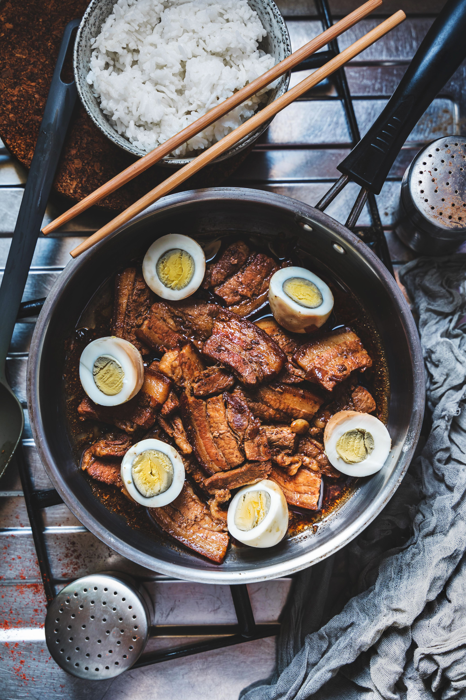

Home
Pork Adobo Recipe

Photo by Eiliv Aceron
Pexels
A simple and easy to make delicious Pork Adobo you can enjoy with your family
A classic Filipino dish that everyone will love.
It is easy to customize to your taste. Start with these few basic ingredients and add whatever extras you like.
Ingredients
- 1 ½ lb. pork bellycubed
- 1 ½ teaspoons whole peppercorn
- 5 to 6 pieces dried bay leaves
- 6 to 8 cloves garliccrushed
- 5 tablespoons soy sauce
- 3 tablespoons coconut vinegar
- 1 ½ cup water or beef broth
- 3 tablespoons cooking oil
- Salt
- Boiled eggs
Steps
- Heat oil in a pan.
- Sauté garlic until lightly browned.
- Toss in peppercorns and bay leaves for 20 seconds.
- Add pork belly, stirring until browned while keeping an eye on the garlic.
- Pour in soy sauce and broth, cover, and simmer on low for 40 minutes until tender.
- Mix in vinegar, bring back to a boil, and cook for 8 minutes.
- Season with salt to taste.
- Plate up, add boiled eggs if desired, and serve.
Recipe adapted from Pork Adobo Recipe by Vanjo Merano on Panlasang Pinoy